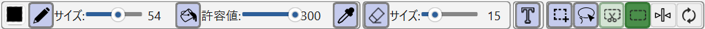
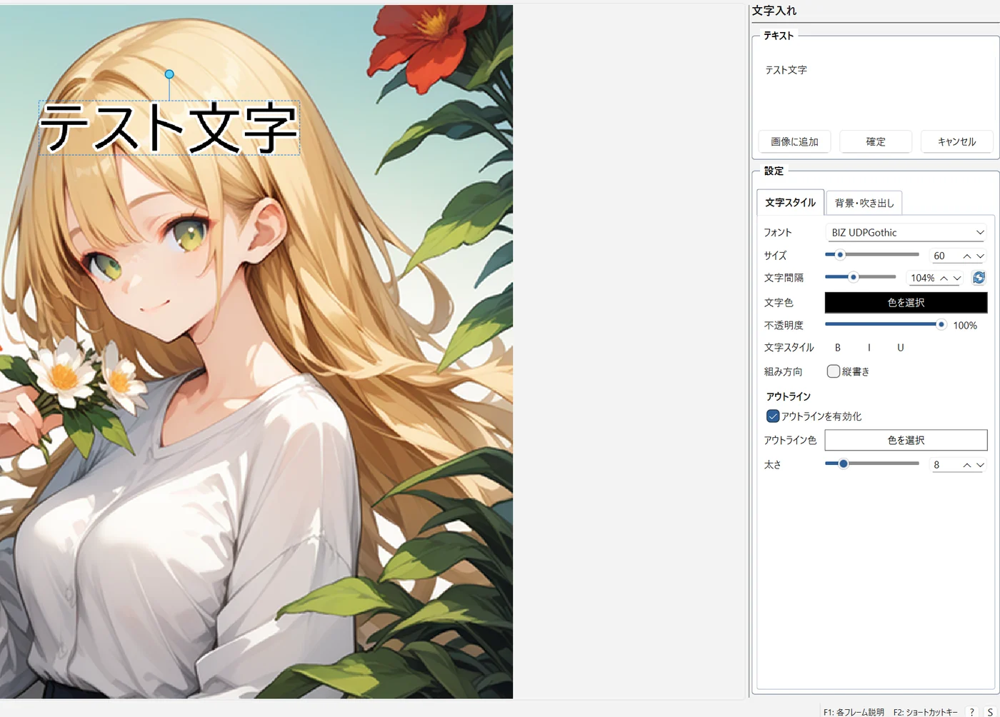
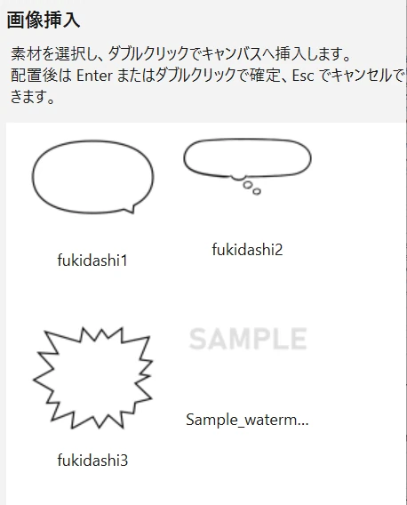
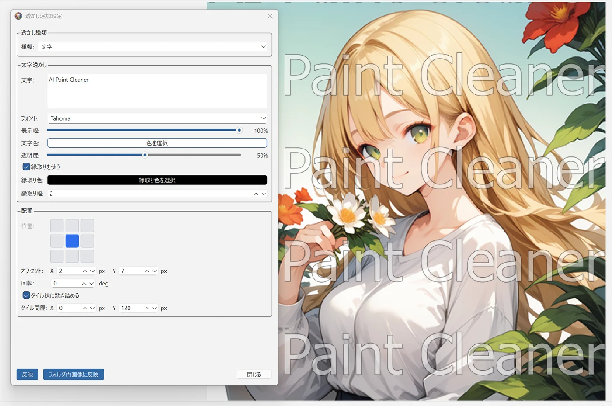

ペイント・文字・選択
簡単な描き込みや文字入れ、範囲を選んでの移動・切り抜き・変形など、基本的な画像編集をひととおり行えます。
ツールバー

123456789101112131415
| 1カラーパレット | ペン・塗りつぶし・単色モザイク・色置換で使う色を選びます。 |
| 2ペン | 左ドラッグで描きます。 |
| 3ペンサイズ | 右クリック＋ホイールでも変更できます。 |
| 4塗りつぶし | 左クリックした場所と同じ色の範囲を塗ります。 |
| 5許容値 | 0で同じ色のみ、大きいほど似た色も含めて塗ります（右クリック＋ホイール）。 |
| 6スポイト | クリックした場所の色を取得します。 |
| 7消しゴム | なぞった範囲を消します。 |
| 8消しゴムサイズ | 右クリック＋ホイールでも変更できます。 |
| 9文字入れ | 右サイドバーで設定して、クリックした位置に文字を配置します。 |
| 10矩形選択 | 四角形の範囲を選択（Enter／ダブルクリックで確定）。 |
| 11自由選択 | なぞった形で範囲を選択（Enter／ダブルクリックで確定）。 |
| 12移動 | 選択範囲を切り取って移動します。 |
| 13コピー | 選択範囲を複製して移動します。 |
| 14選択範囲の処理 | 切り抜き・背景処理・縦横方向の削除／拡張（下表）。 |
| 15変形 | 左右反転・上下反転・左右90°回転。 |
選択範囲の処理
| メニュー | 内容 | キー |
|---|---|---|
| 切り抜き | 選択範囲だけを画像として切り抜きます。 | |
| 選択範囲の背景処理 | 選択範囲だけを現在の背景除去設定で処理します。 | |
| 縦方向削除 | 選択範囲を縦に削除して左右をつなげます。 | Ctrl+Alt+V |
| 横方向削除 | 選択範囲を横に削除して上下をつなげます。 | Ctrl+Alt+H |
| 縦方向拡張 | 縦帯を挿入して画像の幅を広げます。 | Ctrl+Shift+V |
| 横方向拡張 | 横帯を挿入して画像の高さを広げます。 | Ctrl+Shift+H |
| コピー／貼り付け／切り取り | Ctrl+C / Ctrl+V / Ctrl+X |
文字入れ

123456789101112| 1キャンバス上の文字 | 左クリックで配置。ドラッグで移動、上の丸いハンドルで回転できます。 |
| 2テキスト | 入力する文字。改行もできます。 |
| 3画像に追加 | 画像の中央に配置します。 |
| 4確定 | 配置を確定します（右クリック／Enter でも確定）。 |
| 5キャンセル | 配置をやめます（Esc）。 |
| 6文字スタイル | フォントや色などの設定タブ。 |
| 7背景・吹き出し | 文字の背景やフキダシの設定タブ。形状（四角・角丸・楕円・やわらか楕円・びっくり・思考／雲）、しっぽ、背景色、枠線、余白を設定します。 |
| 8フォント・サイズ・文字間隔 | 文字間隔は100%が標準。右のボタンで標準に戻します。 |
| 9文字色・不透明度 | |
| 10文字スタイル | 太字（B）・斜体（I）・下線（U）。 |
| 11組み方向 | チェックで縦書き。 |
| 12アウトライン | 縁取りの有無・色・太さ。 |
確定前なら、右サイドバーで内容を何度でも変更できます。
画像挿入

| 1素材を選ぶ | アプリの image フォルダに入れた画像が、サイドバーに一覧表示されます。 |
| 2挿入する | ダブルクリックでキャンバスに配置します。 |
| 3確定する | Enter またはダブルクリックで確定、Esc でキャンセル。 |
フキダシや透かし用のロゴなど、よく使う素材を image フォルダに入れておくと便利です。
透かし追加

1234567891011121314| 1種類 | 文字／画像。画像は image フォルダの画像から選びます。 |
| 2文字 | 透かしにする文字。 |
| 3フォント | |
| 4表示幅 | 画像の横幅に対する透かし全体の幅。 |
| 5文字色 | |
| 6透明度 | 0%で完全に表示、100%で完全に透明。 |
| 7縁取り | 縁取りの有無・色・幅。 |
| 8位置 | 9方向から選びます。 |
| 9オフセット | 位置からのずらし量（px）。 |
| 10回転 | 角度（deg）。 |
| 11タイル | 画像全体に敷き詰めます。間隔も指定できます。 |
| 12反映 | 現在の画像に反映します。 |
| 13フォルダ内画像に反映 | 同じフォルダの画像すべてに反映します。 |
| 14閉じる |
設定はキャンバスにプレビューされるので、見ながら調整できます。